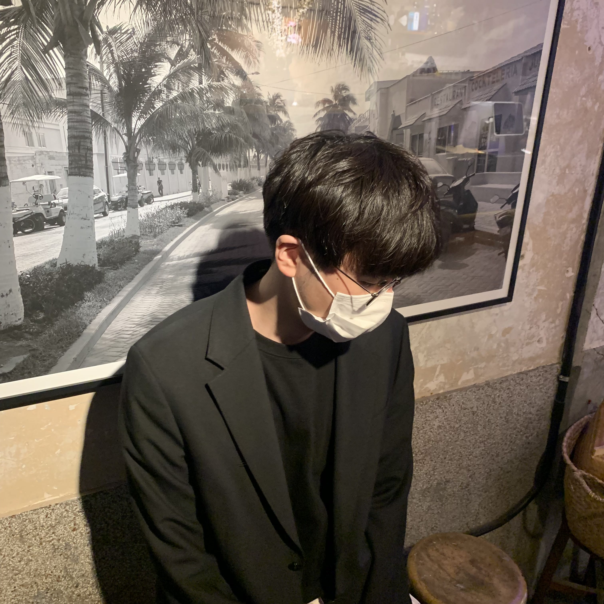
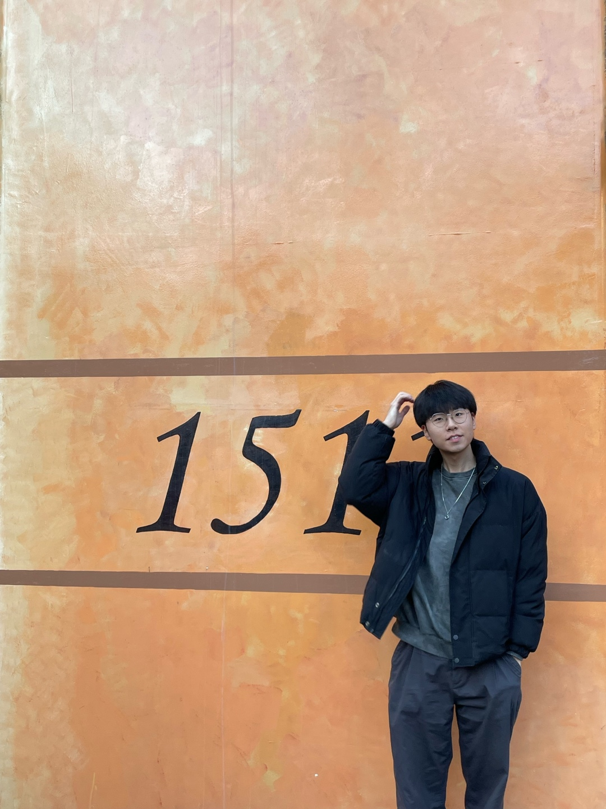
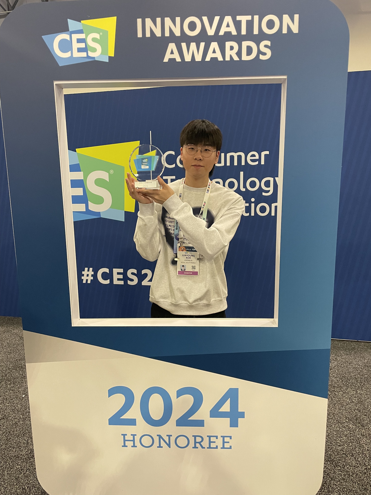
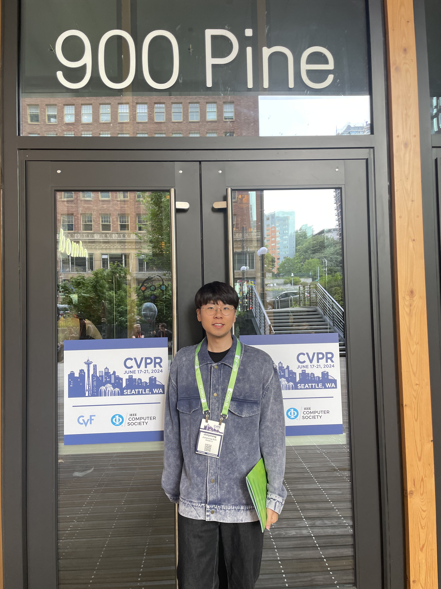
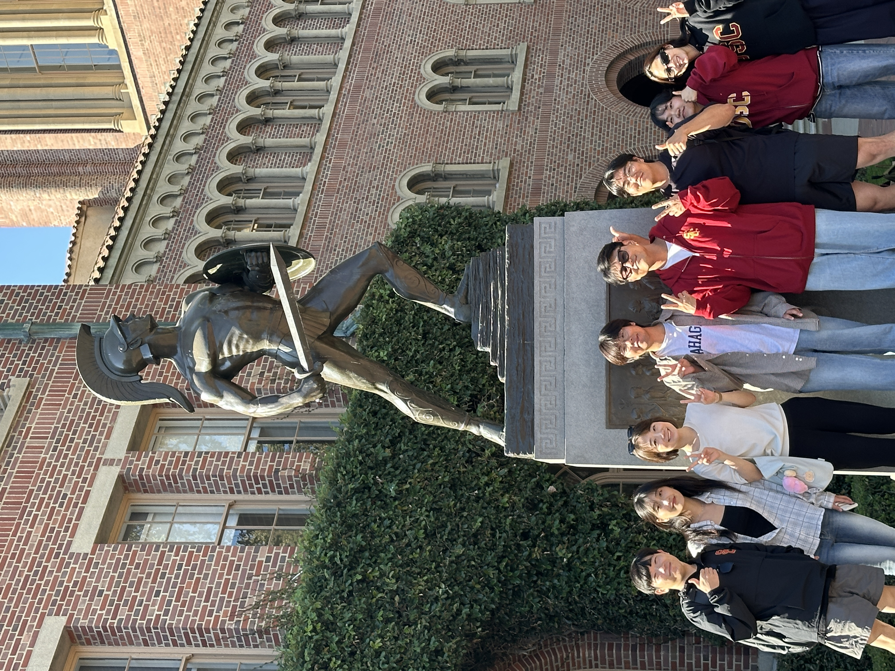
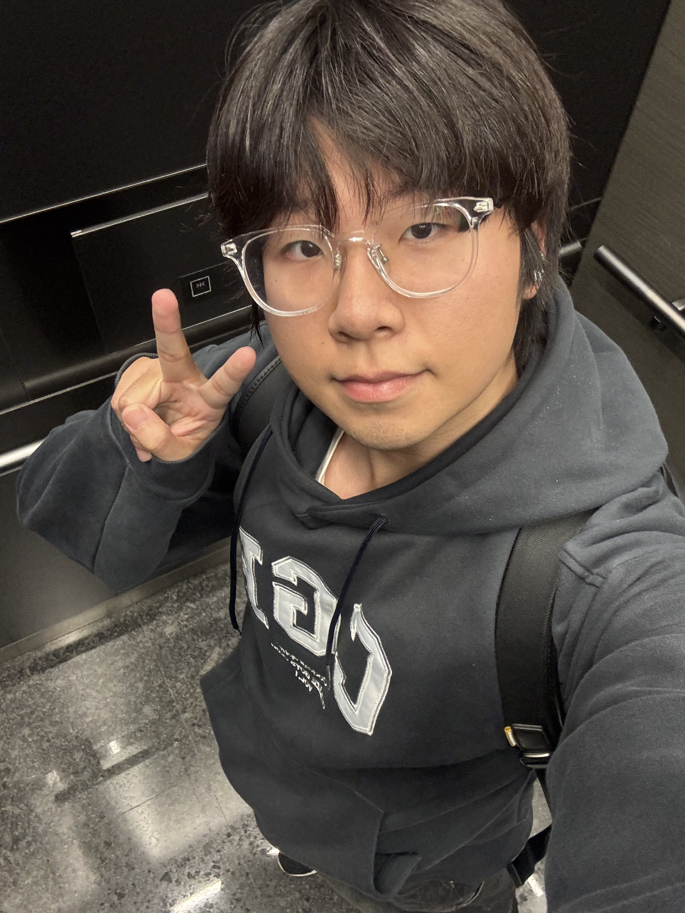

Gallery  2022 Profile  2023 CV  2024.01.09 Las Vegas CES AI Innovation Award  2024.06.17 Seattle CVPR 2024 Workshop  2025.08.08 USC Visiting Student  2025.10.23 KRAFTON Intern 2025.12.09 San Diego NeurIPS 2025 Workshop AI for Music 2026 Bio 공유하기 Twitter Facebook LinkedIn